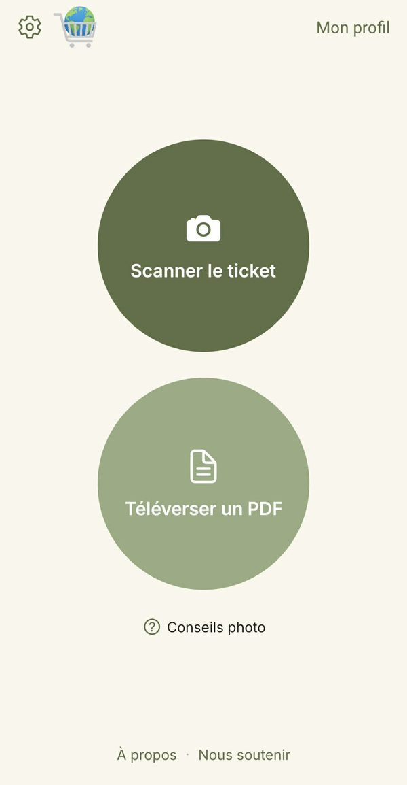
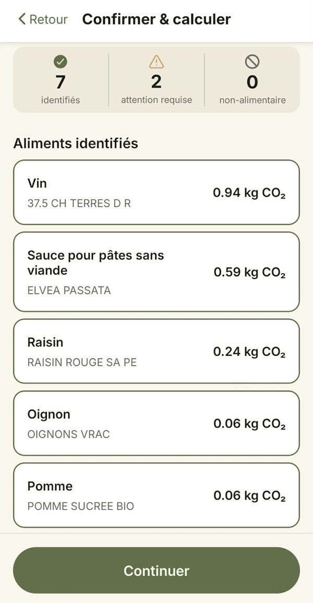
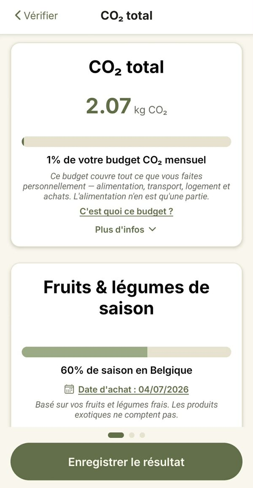

Découvrez l'empreinte carbone de vos courses
Prenez votre ticket de caisse en photo. ClimateCart estime le CO₂ de chaque produit et vous montre le total de vos courses.
Application Android · Français, Nederlands, English
Comment ça marche
-

1. Scannez votre ticket
Photographiez un ticket papier (jusqu'à 3 photos pour un long ticket) ou importez un ticket en PDF.
-

2. Vérifiez les produits
ClimateCart associe chaque ligne de votre ticket à une catégorie d'aliments. Vous voyez ce qui a été reconnu et corrigez ce qui demande votre attention.
-

3. Découvrez votre empreinte
Vous obtenez le total en kg de CO₂, par produit et en part de votre budget CO₂ mensuel. Vous voyez aussi quelle part de vos fruits et légumes frais est de saison en Belgique, et ce que changerait un panier plus végétal.
Créez un compte pour enregistrer vos tickets et suivre votre empreinte dans le temps.
Pourquoi nous l'avons créé
Qui sait vraiment ce que représente 1 kg ou une tonne de CO₂ ? ClimateCart vous met un chiffre concret sous les yeux à chaque fois que vous faites vos courses, pour que ces chiffres prennent enfin du sens. Scanner ses tickets est le moyen, pas le but.
Lire notre déclaration de mission
Des règles, pas d'IA
Aucune IA n'est utilisée pour associer vos produits. ClimateCart s'appuie sur un algorithme d'association relié à une vaste base de données de produits que nous améliorons en continu, pour des résultats toujours meilleurs. Les valeurs carbone proviennent d'Agribalyse, la base de données de référence sur l'alimentation de l'ADEME, l'agence française de la transition écologique. Sans modèle d'IA, cela demande bien moins de puissance de calcul, et un même ticket donne toujours le même résultat.
Des estimations honnêtes
Nous ne disposons pas de données propres à chaque producteur : chaque résultat est donc une estimation, une bonne indication de la valeur typique de ce produit. Vous obtenez ainsi une idée claire de l'impact global de vos choix alimentaires. Ce n'est pas conçu pour comparer des marques qui vendent des produits similaires.
Vos données
Les photos et PDF de vos tickets ne sont pas conservés : ils sont lus une seule fois pour trouver vos produits, puis supprimés. Les photos sont lues par le service de reconnaissance de texte de Google ; les PDF sont traités entièrement par le serveur de ClimateCart, sans aucun service externe. Pas de cookies de suivi, pas d'identifiant publicitaire, pas de données de localisation. Vos résultats ne sont conservés que si vous êtes connecté et choisissez de les enregistrer, et ils restent dans l'UE.